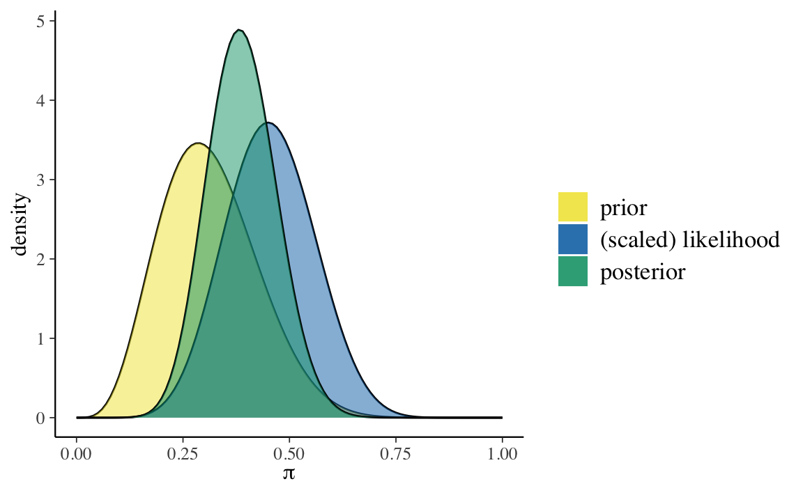
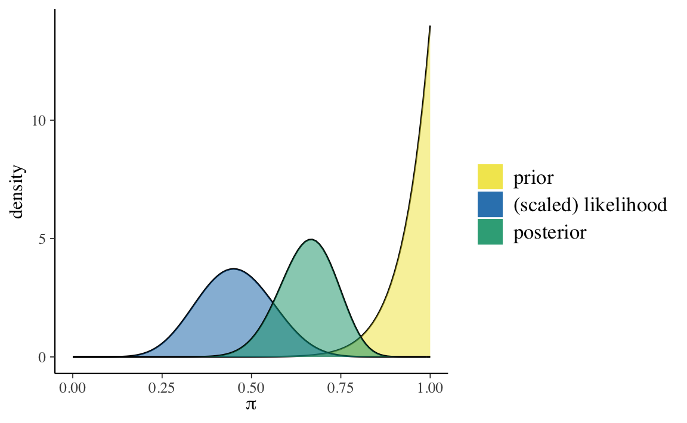
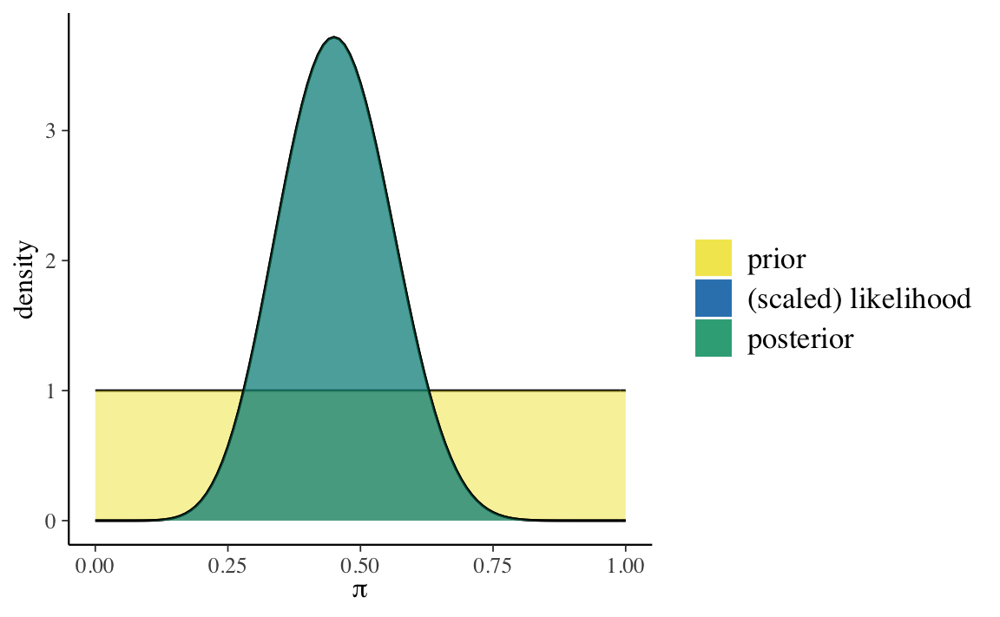

Capitolo 5 L’influenza della distribuzione a priori
La notazione \(p(\theta \mid y) \propto p(\theta) \ p(y \mid \theta)\) rende particolarmente chiaro che la distribuzione a posteriori è un “miscuglio” della distribuzione a priori e della verosimiglianza. Prima di preoccuparci di come calcolare la distribuzione a posteriori, cerchiamo di capire meglio cosa significa “mescolare” la distribuzione a priori e la verosimiglianza. Considereremo qui un esempio discusso da Johnson, Ott, and Dogucu (2022).
5.1 Il test di Benchdel
Nel fumetto di Alison Bechdel The Rule, un personaggio afferma di guardare un film solo se soddisfa le seguenti tre regole (Bechdel 1986):
- almeno due caratteri nel film devono essere donne;
- queste due donne si parlano;
- parlano di qualcosa altro oltre a parlare di qualche uomo.
Questi criteri costituiscono il test di Bechdel per la rappresentazione delle donne nei film. Johnson, Ott, and Dogucu (2022) pongono la seguente domanda “Quale percentuale dei film che avete visto supera il test di Bechdel?”.
Sia \(\pi \in [0, 1]\) una variabile casuale che indica la proporzione sconosciuta di film che superano il test di Bechdel. Tre amiche — la femminista, l’ignara e l’ottimista — hanno opionioni diverse su \(\pi\). Riflettendo sui film che ha visto, la femminista capisce che nella maggioranza dei film mancano personaggi femminili forti. L’ignara non ricorda bene i film che ha visto, quindi non sa quanti film superano il test di Bechdel. Infine, l’ottimista pensa che, in generale, le donne sono ben rappresentate all’interno dei film: secondo lei quasi tutti i film superano il test di Bechdel. Le tre amiche hanno dunque tre modelli a priori diversi di \(\pi\).
Abbiamo visto in precedenza come sia possibile usare la distribuzione Beta per rappresentare le credenze a priori. Ponendo la gran parte della massa della probabilità a priori su valori \(\pi < 0.5\), la distribuzione a priori \(\text{Beta}(5, 11)\) riflette il punto di vista femminista secondo il quale la maggioranza dei film non supera il test di Bechdel. Al contrario, la \(\text{Beta}(14,1)\) pone la gran parte della massa della distribuzione a priori su valori \(\pi\) prossimi a 1, e corrisponde quindi alle credenze a priori dell’amica ottimista. Infine, una \(\text{Beta}(1 ,1)\) o \(Unif(0, 1)\), assegna lo stesso livello di plausibilità a tutti i valori \(\pi \in [0, 1]\), e corrisponde all’incertezza a priori dell’ignara.
Nell’esempio di Johnson, Ott, and Dogucu (2022), le tre amiche decidono di rivedere un campione di \(n\) film e di registrare \(y\), ovvero il numero di film che superano il test di Bechdel. Se \(y\) corrisponde al numero di “successi” in un numero fisso di \(n\) prove Bernoulliane i.i.d., allora la dipendenza di \(y\) da \(\pi\) viene specificata nei termini di un modello binomiale. Quindi, per ciascuna delle tre amiche è possibile scrivere un modello beta-binomiale
\[\begin{align} Y \mid \pi & \sim \mbox{Bin}(n, \pi) \notag\\ \pi & \sim \mbox{Beta}(\alpha, \beta) \notag \end{align}\]
che utilizza diversi parametri \(\alpha\) e \(\beta\) per la distribuzione a priori e che conduce a tre diverse distribuzioni a posteriori per il parametro sconosciuto \(\pi\):
\[\begin{equation} \pi \mid (Y = y) \sim \mbox{Beta}(\alpha + y, \beta + n - y). \end{equation}\]
Johnson, Ott, and Dogucu (2022) si chiedono come le credenze a priori delle tre amiche influenzano le conclusioni a posteriori a cui esse giungono, dopo avere osservato i dati. Si chiedono inoltre in che modo la dimensione del campione moduli l’influenza della distribuzione a priori sulla distribuzione a posteriori. Per rispondere a queste domande, Johnson, Ott, and Dogucu (2022) consideriamo tre diversi scenari:
- gli stessi dati osservati, ma distribuzioni a priori diverse;
- dati diversi, ma la stessa distribuzione a priori;
- dati diversi e distribuzioni a priori diverse.
5.2 Stessi dati ma diverse distribuzioni a priori
Iniziamo con lo scenario che descrive il caso in cui abbiamo gli stessi dati ma diverse distribuzioni a priori. Supponiamo che le tre amiche decidano di guardare insieme 20 film selezionati a caso:
data(bechdel, package = "bayesrules")
set.seed(84735)
bechdel_20 <- bechdel %>%
sample_n(20)
bechdel_20 %>%
head(3)
#> # A tibble: 3 × 3
#> year title binary
#> <dbl> <chr> <chr>
#> 1 2005 King Kong FAIL
#> 2 1983 Flashdance PASS
#> 3 2013 The Purge FAILDi questi 20 film, solo il 45% (\(y\) = 9) passa il test di Bechdel:
bechdel_20 %>%
janitor::tabyl(binary) %>%
janitor::adorn_totals("row")
#> binary n percent
#> FAIL 11 0.55
#> PASS 9 0.45
#> Total 20 1.00Esaminiamo ora le tre distribuzioni a posteriori. Per la femminista abbiamo:
bayesrules:::plot_beta_binomial(
alpha = 5, beta = 11, y = 9, n = 20
) 
bayesrules:::summarize_beta_binomial(
alpha = 5, beta = 11, y = 9, n = 20
)
#> model alpha beta mean mode var sd
#> 1 prior 5 11 0.3125000 0.2857143 0.01263787 0.11241827
#> 2 posterior 14 22 0.3888889 0.3823529 0.00642309 0.08014418Per l’ottimista abbiamo:
bayesrules:::plot_beta_binomial(
alpha = 14, beta = 1, y = 9, n = 20
) 
bayesrules:::summarize_beta_binomial(
alpha = 14, beta = 1, y = 9, n = 20
)
#> model alpha beta mean mode var sd
#> 1 prior 14 1 0.9333333 1.0000000 0.003888889 0.06236096
#> 2 posterior 23 12 0.6571429 0.6666667 0.006258503 0.07911070Infine, per l’ignara troviamo
bayesrules:::plot_beta_binomial(
alpha = 1, beta = 1, y = 9, n = 20
)
bayesrules:::summarize_beta_binomial(
alpha = 1, beta = 1, y = 9, n = 20
)
#> model alpha beta mean mode var sd
#> 1 prior 1 1 0.5000000 NaN 0.08333333 0.2886751
#> 2 posterior 10 12 0.4545455 0.45 0.01077973 0.1038255Per calcolare la distribuzione a posteriori, ho qui usato le funzioni del pacchetto bayesrules. Ma per lo schema beta-binomiale è facile trovare i parametri della distribuzione a posteriori. Per esempio, nel caso dell’amica femminista, la distribuzione a posteriori è una Beta di parametri
\[ \alpha_{post} = \alpha_{prior} + y = 5+9 = 14 \] e
\[ \beta_{post} = \beta_{prior} + n - y = 11 + 20 - 9 = 22. \]
L’aggiornamento bayesiano indica che le tre amiche ottengono valori per la media (o la moda) a posteriori per \(\pi\) molto diversi. Dunque, anche dopo avere visto 20 film, le tre amiche non si trovano d’accordo su quale sia la proporzione di film che passano il test di Bechdel.
Questo non dovrebbe sorprenderci. L’amica ottimista aveva opinioni molto forti sul valore di \(\pi\) e i pochi nuovi dati che le sono stati forniti non sono riusciti a convincerla a cambiare idea: crede ancora che i valori \(\pi > 0.5\) siano i più plausibili. Lo stesso si può dire, all’estremo opposto, dell’amica femminista: anche lei continua a credere che i valori \(\pi < =.5\) siano i più plausibili. Infine, l’ignara non aveva nessuna opinione a priori su \(\pi\) e, anche dopo avere visto 20 film, continua a credere che il valore \(\pi\) più plausibile sia quello intermedio, nell’intorno di 0.5.
5.3 Dati diversi ma la stessa distribuzione a priori
Supponiamo ora che l’amica ottimista abbia tre amiche, Maria, Anna e Sara, tutte ottimiste come lei. L’ottimista chiede a Maria, Anna e Sara di fare loro stesse l’esperimento descritto in precedenza. Maria guarda 13 film; di questi 6 passano il test di Bechdel. Anna guarda 63 film; di questi 29 passano il test di Bechdel. Sara guarda 99 film; di questi 46 passano il test di Bechdel.
Supponiamo che Maria, Anna e Sara condividano la stessa credenza a priori su \(\pi\): ovvero, Beta(14, 1). In tali circostanze e, alla luce dei dati osservati, cosa possiamo dire delle tre distribuzioni a posteriori?
p1 <- bayesrules:::plot_beta_binomial(
alpha = 14, beta = 1, y = 6, n = 13
) +
theme(legend.position = "none")
p2 <- bayesrules:::plot_beta_binomial(
alpha = 14, beta = 1, y = 29, n = 63
) +
theme(legend.position = "none")
p3 <- bayesrules:::plot_beta_binomial(
alpha = 14, beta = 1, y = 46, n = 99
) +
theme(legend.position = "none")
p1 + p2 + p3FIGURA 5.1: Aggiornamento bayesiano per le credenze di Maria, Anna e Sara.
Notiamo due cose. All’aumentare delle informazioni disponibili (ovvero, all’aumentare dell’ampiezza del campione), la distribuzione a posteriori si allontana sempre di più dalla distribuzione a priori, e si avvicina sempre di più alla verosimiglianza. In secondo luogo, all’aumentare dell’ampiezza del campione la varianza della distribuzione a posteriori diminuisce sempre di più — ovvero, diminuisce l’incertezza su quelli che sono i valori \(\pi\) più plausibili.
5.4 Dati diversi e diverse distribuzioni a priori
Nella figura successiva esaminiamo le distribuzioni a posteriori che si ottengono incrociando tre diversi set di dati (\(y\) = 6, \(n\) = 13;, \(y\) = 29, \(n\) = 63; \(y\) = 66, \(n\) = 99) con tre diverse distribuzioni a priori [Beta(14, 1), Beta(5, 11), Beta(1, 1)].
p1 <- bayesrules:::plot_beta_binomial(
alpha = 14, beta = 1, y = 6, n = 13
) +
theme(legend.position = "none")
p2 <- bayesrules:::plot_beta_binomial(
alpha = 14, beta = 1, y = 29, n = 63
) +
theme(legend.position = "none")
p3 <- bayesrules:::plot_beta_binomial(
alpha = 14, beta = 1, y = 46, n = 99
) +
theme(legend.position = "none")
p4 <- bayesrules:::plot_beta_binomial(
alpha = 5, beta = 11, y = 6, n = 13
) +
theme(legend.position = "none")
p5 <- bayesrules:::plot_beta_binomial(
alpha = 5, beta = 11, y = 29, n = 63
) +
theme(legend.position = "none")
p6 <- bayesrules:::plot_beta_binomial(
alpha = 5, beta = 11, y = 46, n = 99
) +
theme(legend.position = "none")
p7 <- bayesrules:::plot_beta_binomial(
alpha = 1, beta = 1, y = 6, n = 13
) +
theme(legend.position = "none")
p8 <- bayesrules:::plot_beta_binomial(
alpha = 1, beta = 1, y = 29, n = 63
) +
theme(legend.position = "none")
p9 <- bayesrules:::plot_beta_binomial(
alpha = 1, beta = 1, y = 46, n = 99
) +
theme(legend.position = "none")
(p1 + p2 + p3) / (p4 + p5 + p6) / (p7 + p8 + p9)FIGURA 5.2: Sulle colonne (a partire da sinistra) i dati utilizzati sono, rispettivamente, (y = 6, n = 13), (y = 29, n = 63) e (y = 66, n = 99). Sulle righe (a partire dall’alto), le distribuzioni a priori usate sono: Beta(14, 1), Beta(5, 11) e Beta(1, 1).
La figura indica che, se il campione è grande, una distribuzione a priori debolmente informativa ha uno scarso effetto sulla distribuzione a posteriori. Invece, se il campione è piccolo, anche una distribuzione a priori debolmente informativa ha un grande effetto sulla distribuzione a posteriori.
5.5 Collegare le intuizioni alla teoria
Il compromesso che abbiamo osservato nell’esempio precedente, che combina la distribuzione a priori con le evidenze fornite dai dati, è molto vicino alle nostre intuizioni. Ma è anche il frutto di una necessità matematica. È infatti possibile riscrivere la (4.1) nel modo seguente
\[\begin{align} \E_{\text{post}} &[\text{Beta}(\alpha + y, \beta + n - y)] = \frac{\alpha + y}{\alpha + \beta +n}\notag\\ &= \frac{a+b}{a+b+n} \cdot \frac{a}{a+b} + \frac{n}{a+b+n} \cdot \frac{y}{n}. \tag{5.1} \end{align}\]
Ciò indica che il valore atteso a posteriori è una media pesata fra il valore atteso a priori \(\left( \frac{\alpha}{\alpha+\beta}\right)\) e la frequenze di successi osservata \(\left(\frac{y}{n}\right)\). I pesi sono \(\left( \frac{\alpha+\beta}{\alpha+\beta+n}\right)\) e \(\left( \frac{n}{\alpha+\beta+n}\right)\). Quindi, quando \(n\) è grande rispetto ad \(\alpha + \beta\), conta molto quanto abbiamo osservato e conta poco la credenza a priori. Viceversa, quando \(n\) è piccolo rispetto a \(\alpha + \beta\), le osservazioni contano poco rispetto alla credenza a priori.
Queste osservazioni ci fanno capire come scegliere i parametri \(\alpha\) e \(\beta\): se vogliamo assumere una totale ignoranza rispetto al fenomeno in esame, la scelta coerente è \(\alpha = \beta = 1\) (ogni valore di \(\theta\) è ugualmente probabile); se invece abbiamo delle credenze a priori, allora possiamo scegliere \(\alpha\) così che sia uguale al valore atteso a priori, mentre \(\alpha + \beta\) esprime l’importanza che diamo all’informazione a priori: maggiore è il valore di \(\alpha + \beta\), tanti più dati serviranno per allontanare la distribuzione a posteriori dalla distribuzione a priori. Se \(n\) è grande, infine, la distribuzione a posteriori sarà scarsamente influenzata dalla distribuzione a priori, a meno di scelte estreme.
Commenti e considerazioni finali
La conclusione che possiamo trarre dall’esempio di Johnson, Ott, and Dogucu (2022) è molto chiara: l’aggiornamento bayesiano può essere paragonato ai processi di ragionamento del senso comune. Quando le nuove evidenze (i dati) sono deboli, non c’è ragione di cambiare idea (le nostre credenze “a posteriori” sono molto simili a ciò che pensavamo prima di avere osservato i dati). Quando le nuove evidenze sono irrefutabili, invece, è necessario modificare le nostre credenze sulla base di ciò che ci dicono i dati, quali che siano le nostre credenze pregresse — non farlo significherebbe vivere in un mondo di fantasia e avere scarse possibilità di sopravvivere nel mondo empirico. L’aggiornamento bayesiano esprime in maniera quantitativa e precisa ciò che ci dicono le nostre intuizioni.
Incredibilmente, però, l’approccio frequentista nega questa logica. I test frequentisti non tengono conto delle conoscenze pregresse. Dunque, se un test frequentista, calcolato su un piccolo campione (ovvero, quando i dati sono molto deboli), suggerisce che dovremmo farci un’opinione di un certo tipo sul fenomeno in esame, l’indicazione è di prendere seriamente il risultato del test quali siano le evidenze precedenti — le quali, possibilmente, mostrano che il risultato del test non ha alcun senso. È sorprendente che un tale modo di pensare possa essere preso sul serio nella comunità scientifica, ma vi sono alcuni ricercatori che continuano a seguire questo modo di (s)ragionare. Dato che in questo Capitolo paliamo di fumetti, concluderei dicendo che la presente discussione è catturata nella maniera più chiara possibile in questa famosa striscia.